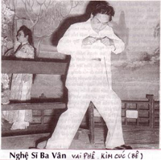
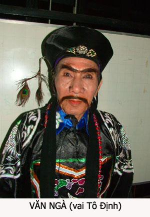

Đầu thế kỷ 21 nầy, muốn học ngành nghề nào thì cũng có trường lớp, sách vở, tài liệu dạy về ngành nghề đó. Có khi không cần phải cặp sách đến trường học mà ngồi nhà, học theo cách hàm thụ thì giáo sư và tài liệu giáo khoa cũng theo máy computeur vô đến nhà mình, tới phòng riêng của mình và theo giờ giấc quy định của mình để việc học hành được thoải mái. Đời sống trong thời đại văn minh cơ học, vi tính học thiệt là vô cùng tiện lợi.
Hơn 60 năm trước đây thì lại khác. Nước Việt Nam hồi đó còn là thuộc địa của Pháp, mà nước Pháp lại là một nước bị bại trận ở phương trời Âu trong những năm đầu Đại chiến thế giới lần thứ hai. Ở Đông Dương, quân Nhựt Bổn cũng đã có mặt trên nhiều tỉnh thành lớn của cả ba miền đất nước. Mọi mặt đời sống tình thần, văn học và vật chất đều bị khó khăn, bị hạn chế, thiếu thốn và lai tạp. Trong bối cảnh lịch sử của xã hội ta lúc đó, nghệ thuật sân khấu cải lương phải chật vật lắm mới phấn đấu để tồn tại và phát triển được.
Tôi nhắc lại việc học nghề hát của hơn 60 năm trước đây, có bạn sẽ nghĩ là chuyện đó xưa quá rồi, hoặc là so với học thuật bây giờ thì thiệt là kém khuyết. Các bạn có lý của các bạn. Tôi viết lại những gì mình đã trải qua hơn nửa đời người trên sân khấu, mong các nhà học giả để tâm nghiên cứu nghệ thuật, đúc kết lại những điểm nào đó có ích, bồi bổ cho học thuật cải lương sau nầy. Và chót hết, ý nghĩ khiêm tốn của tôi là các bạn đọc lại những trang hồi ký nầy, mong các bạn giải trí như được coi chuyện đời xưa, nhớ lại Sàigòn và những tỉnh thành với bao kỷ niệm thân thương mà mình đã sống và hiện nay đã biền biệt xa xôi.
Hồi đó… khoảng năm 1940, lúc thời trung tá Ducouroy tổ chức phong trào thể dục thể thao, sau cuộc đua xe đạp Đông Dương, từ Bắc vào Sàigòn, tôi vừa mê thể thao vừa mê xem hát cải lương. Số là thời đó cua-rơ Lê Thành Các, vua leo núi, mặc áo vàng khi thắng các cuộc đua leo đèo Hải Vân, Đèo Cả… anh Lê Thành Các, được báo chí phong cho danh hiệu Phượng Hoàng Lê Thành Các, là thần tượng của tôi, lại chính là bầu gánh hát cải lương, cha của nữ nghệ sĩ Bo Bo Hoàng. Ngoài gánh hát của bầu Các đóng đô thường xuyên ở đình Tân Kiểng, tôi còn mê gánh hát của ông bầu Đỗ Xuân Ứng, người Bắc, đã đưa đoàn hát Ứng Lập Ban từ Hà Nội theo đoàn cua-rơ xe đạp chạy vào Nam. Gánh Ứng Lập Ban hát tại mỗi chặng dừng của đoàn cua-rơ xe đạp, hát dài từ Hà Nội đến Phủ Lý, Vinh, Huế, Đà Nẵng, Qui Nhơn, Nha Trang, Phan Thiết và đêm phát giải thưởng Cuộc đua xe đạp Đông Dương tại nhà hát Tây Sàigòn. Sau đó ông bầu Đỗ Xuân Ứng tách đoàn cua-rơ xe đạp để đưa gánh hát lưu diễn Sàigòn và Lục Tỉnh. Ứng Lập Ban hát thêm nhiều xuất ở rạp Modeme đường Espagne trước khi đoàn trở về Hà Nội, (bây giờ là rạp Long Phụng, dành riêng cho đoàn Hát Bội Thành Phố). Lúc đó tôi còn đi học, nhà ở đường Espagne, góc chợ Bến Thành, nên khi có thì giờ là tôi loanh quanh trước rạp Moderne coi các panneaux quảng cáo, có khi vô rạp coi tập tuồng, tập hát.
Còn nhớ hồi đó, gánh Ứng Lập Ban có các nam nghệ: Đào Mộng Long, Huỳnh Thái, Anh Đệ, Sỹ Tiến, Paul Bách, và nữ diễn viên: Ái Liên, Bích Hợp, Bích Thuận, Kim Chung, Khánh Hội, Túy Định, Thu Nhi… Ái Liên có giọng ca tân nhạc như Tây như đầm, Ái Liên được Đài Pháp Á thâu thanh và phát thanh các bài ca J’ai deux amours, C’est à Capri, Marinella, Tango chinois… Bọn học sinh chúng tôi rất mê nên lân la tới rạp coi Ái Liên học ca như thế nào, tập tuồng ra sao, nhưng thường thì chỉ thấy các nghệ sĩ học đánh võ, ráp tuồng và học ca vọng cổ điệu Sàigòn. Tôi mê coi cải lương, mê coi tập tuồng, tập hát có lẽ là từ lúc nầy, tôi mê Ái Liên, Kim Chung, Bích Thuận như mê Phùng Há, Năm Phỉ, Năm Châu…tôi sưu tập hình ảnh các nghệ sĩ thần tượng của tôi dán vô sổ lưu niệm. Cứ như vậy, từng bước, từng bước…tôi bước vào lãnh vực sân khấu cải lương!
Năm 1948, theo lời rủ rê của nghệ sĩ Tám Cao, Trường Xuân, Tuấn Sĩ, tôi theo đoàn hát cải lương Tiếng Chuông, rày đây mai đó. Lúc đó trong gánh hát, phần lớn ít học, dốt chữ, tôi biết chút đỉnh tiếng Tây nên tôi được ông Bầu Cang cho làm quản lý, để đi tới các đồn bót Pháp xin giấy phép hát, giao thiệp với Cò bót khi có liên quan tới trật tự an ninh của đoàn và đi xin kiểm duyệt tuồng ở Bộ Thông Tin. Việc Quản Lý gánh hát đối với tôi tuy dễ dàng và thuận lợi, có nhiều lợi nhuận, nhưng tôi theo đoàn hát chính là vì mê tiếng đờn, giọng hát chớ không phải vì kiếm tiền để sinh sống; vì vậy tôi bắt đầu học hát để mong một ngày nào đó, tôi sẽ trở thành nghệ sĩ, làm vua làm chúa, làm kép mùi như Tuấn Sĩ, Thanh Cao hay kép độc như Trường Xuân. Ý muốn nhỏ nhoi đó coi vậy mà khó thực hiện vì tôi tự khám phá ra rằng tôi không có “duyên sân khấu”, tôi bèn xoay qua việc học hát, học ca, học tất cả các ngành nghệ thuật nào có liên quan tới sân khấu cải lương để chuyên hẳn vô nghề sáng tác tuồng cải lương.
60 năm trước, nghệ sĩ học hát như thế nào?
Có đi sâu vô nghề hát sân khấu mới biết là học nghề hát thiệt là khó, mà học nghề soạn giả lại càng khó hơn. Vì tôi có thời gian làm việc lâu với anh Thành Tôn, anh Hữu Thoại về ngành Hát Bội và Hát Bội pha cải lương, tôi lại cũng học hỏi nơi anh Năm Châu, Năm Nghĩa, Năm Nở về nghệ thuật cải lương nên tôi học được cả hai thứ. Tôi nhận thấy rằng hát và viết tuồng Hát Bội, hát Hồ Quảng, hát cải lương tuồng cổ hoàn toàn khác với phương thức học và hát tuồng cải lương Lịch Sử, tuồng Xã Hội.
Bài học vỡ lòng của nghệ sĩ Hát Bội, nghệ sĩ hát Hồ Quảng và cải lương tuồng cổ:
Tôi theo đoàn Thanh Minh, hát thường trực nơi rạp Thành Xương nên thường qua lại bên nghệ sĩ Hát Bội pha cải lương của gánh Vĩnh Xuân Ban – Bầu Thắng nơi đình Cầu Quan. Tôi có theo dõi, học thầm những khi anh Minh Tơ dạy cho các em nghệ sĩ trong đoàn, nhứt là khi anh đào tạo nhóm nghệ sĩ đồng ấu Minh Tơ. Tuy tôi không phải là học viên chính thức nhưng bài học nào của anh Minh Tơ dạy, tôi cũng có ghi ký chú, có khi chép cả những bài ca, cách múa vào sổ tay. Việc học tập nầy đã giúp tôi rất nhiều trong những buổi đầu khi tôi sáng tác tuồng Tàu, tuồng dã sử.
Nghệ sĩ mới học Hát Bội, học Hát Bội pha Quảng phải học mười bài học vỡ lòng:
Bài 1\- Học nói lối, học bẩm, báo:
Thần đẳng lưỡng ban văn võ, (Chúng tôi hai hàng văn võ chầu vua)
Tiến lai hiến thọ ba đăng.(Đến chúc thị bằng bài múa Hoa đăng)
Bài 2\- Xem Tam Lang:
Tập cách đi, cách uốn mình cho dẻo như để 3 cái chậu theo hình chữ V, học viên đến chậu phải nghiêng mình lướt qua. Đây là bài tập căn bản về nghệ thuật đi. Lúc mặc giáp trụ hay mãng bào thì nhứt định phải đi kiểu nầy mới đúng điệu.
Bài 3\- Múa Yên Lung Bích Thọ.
Điệu múa đơn giản để tập động tác ray chân phối hợp.
Bài 4\- Múa Tam Quốc, bài Thời Hồ Huỳnh Cân.
Tập động tác tay chân phức tạp hơn, kết hợp với diễn tả tâm trạng nhơn vật.
Tôi đơn cử một vài ví dụ về cách học hát của nghệ sĩ Hát Bội, Hát Bội pha Quảng để thấy rằng những động tác tay chân, nét mặt, ánh mắt, cách đi đứng đều có quy định đúng trình thức. Người không học nghề căn bản không thể hát chung với những nghệ sĩ khác. Ngay như việc đóng vai quân sĩ trên sân khấu hát tuồng cổ cũng là khó khăn, phải học cho đúng cách. Làm quân, phải học cách cầm cờ chạy hiệu, học bẩm báo, học cách mở then cửa vào nhà, học cách bắt ngựa, dâng ngựa, học cách dâng rượu, học múa đạo cụ, múa kiếm, múa đao, múa kích… v.v… Tất cả các động tác phải rập ràng theo điệu nhạc, theo trống phách.
Ngoài các động tác hình thể phải đúng theo khuôn mẫu, lối hát Nam, hát Khách, lối xướng, điệu tán đều mẫu mực. Lối xướng cũng nhiều cách khác nhau như xướng Lăng, xướng Rượu, xướng Thiền, xướng thường, xướng xuống Nam…Riêng hát Nam, có nam ai, nam biệt, nam chạy, nam hận, nam khòng còn gọi là nam dựng, nam lụy, nam rịn, nam ru, nam thiền, nam thương, nam xuân…Cũng với lời văn lục bát hoặc song thất lục bát, cách hát, cách xướng “chinh” đi nửa giọng, “nâng” lên một chút, “ngân” vang kéo dài…là khác biệt rồi… Khó cho người nghệ sĩ hát mà cũng khó cho khán thính giả, muốn thưởng thức đúng điệu thì khán thính giả cũng phải sành điệu Hát Bội thì mới thấy được hết cái hay của nghệ sĩ.
Nghệ sĩ Hát Bội vì học bài bản như nhau nên người nào tốt giọng, tiếng vang xa với điệu múa đẹp, ánh mắt sắc bén, nụ cười tươi, có duyên sân khấu là chiếm được nhiều cảm tình của khán giả. Soạn giả Hát Bội cũng bị hạn chế khả năng sáng tạo vì phải tuân thủ theo các trình thức hát mẫu mực. Vì vậy, tôi tự thấy mình không đủ sức theo nghề Hát Bội nên tôi học theo hướng cải lương.
Nghệ sĩ cải lương có nhiều cơ hội phát triển bản sắc riêng:
Khác với Hát Bội là loại hình nghệ thuật cổ điển, nghệ thuật hát cải lương sinh sau đẻ muộn, trong quá trình lớn dần lên, hát cải lương tự mày mò một lối hát phù hợp với cách sáng tác mới và phục vụ lớp khán giả mới.
Tác phẩm cải lương chịu ảnh hưởng theo lối viết kịch của Anh, Pháp nên mỗi nhân vật trong tuồng cải lương là có số phận và cá tính riêng. Điều nầy bắt buộc các diễn viên, ngoài khả năng trời cho về Thinh và Sắc, người diễn viên phải nghiên cứu cách thể hiện cá tính của nhân vật một cách đậm nét nhứt, điển hình nhứt, phù hợp với nhơn vật mà tác giả muốn khắc họa trong kịch bản của mình. Chính vì cá tánh khác biệt nhau nên nhân vật không có một mẫu hình chung cho các vai mà phải tìm tòi cho ra cái khác biệt, cái nét riêng, đặc sắc nhứt của nhân vật. Ví dụ Hát Bội có hôn quân thì vua hôn quân tuồng nào cũng giống nhau ở chỗ cùng mê tửu sắc, ngu muội, bị gian thần và ái phi xỏ mũi, bất công với trung thần và cuối cùng là bị soán ngôi.
Trong tuồng cải lương thì người điên, người say, người ghen, người hiền, kẻ ác, nhân vật đó ở tuồng nầy khác với tuồng kia. Tôi còn nhớ anh Ba Vân, được báo chí tặng cho mỹ hiệu là quái kiệt, khi anh đóng vai Phê trong tuồng “Khi Người Điên Biết Yêu”, anh Ba Vân đã bỏ nhiều ngày vô nhà thương điên Biên Hòa và nhà thương điên Chợ Quán để quan sát nét mặt, cách nhìn, cách nói chuyện hay la hét của người điên. Trở về đoàn hát, anh một mình tập luyện và khi tập tuồng, anh diễn thử nhơn vật Phê điên theo kiểu anh đã nghiên cứu.

Anh Năm Châu, sau khi xem anh Ba Vân diễn thử, góp ý:
– Vai Phê là một nhân vật điên vì tình, yêu Bê, người em gái (con nuôi của cha, nghĩa là giữa Phê và Bê không có quan hệ huyết thống nào cả), nhưng Bê không biết rõ cô là em nuôi, tưởng Phê “điên” mới có thứ tình yêu loạn luân đó. Nên khi Phê (Ba Vân) tỏ tình với Bê, càng tỏ vẻ tha thiết, Bê càng thấy kỳ quái. Bê phản ứng ghê tởm sự loạn luân của anh, Bê né tránh xa ra thì Phê càng xáp vô, vẻ mặt nửa như ngượng ngùng, nửa như chai đá, Phê nói:
“Bê ơi! Em thật là sáng đẹp, thật là tươi đẹp, là chúa của tất cả hoa đẹp trong vườn…Hà..hà…Em nói là anh điên à? Phải, anh điên vì em.., anh điên thật Bê à”.
Phê nói năng càng nhừa nhựa, càng làm cho khán giả cảm thấy cái điên của kẻ si tình. Khi đối diện với nhân vật Thi, tình địch thì Phê lồng lộn như con thú dữ bị thương, càng tô đậm cái nét điên của nhân vật nầy. Và khi dằng co với ông Bạch (cha ruột của Phê), lỡ tay làm ông té sấp nhằm ngay lưỡi dao, ông Bạch chết ngay sau đó, Phê thét lên một tiếng thét ghê rợn…Thi và Bê chạy ra thì Phê chỉ vào Thi, đổ trút tội giết ông Bạch vào đầu Thi. Tâm trạng của Phê lúc đó là hoảng loạn, hoảng loạn một cách ghê rợn, gợi lên hình ảnh của một người điên thật sự.
Ý kiến của anh Năm Châu thật rõ ràng: Phê điên cuồng dữ dội khi đối diện với Thi, người tình địch. Phê yêu tha thiết, tỏ tình một cách si mê mà cô em gái Bê cứ tưởng là anh điên. Lúc nầy Phê không dữ dội, không la hét, nhưng anh càng tỏ ra si mê tới điên dại, cộng với diễn xuất ghê tởm của cô em gái, khán giả cảm thấy Phê là hình tượng của một kẻ điên vì tình. Và một tâm trạng nữa, tâm trạng hoảng loạn của kẻ vô tình giết cha và cho là vì Thi mới xảy ra nông nỗi, cái hoảng loạn gần như điên cuồng tô đậm thêm hình tượng Phê điên vì tình.
Anh Ba Vân đã thành công khi bản thân anh đã tập luyện theo sự góp ý của anh Năm Châu, anh đã tạo ra một vai điên không giống những vai điên đã có trước kia trên sân khấu Hát Bội và cải lương.
Qua cách dàn dựng của anh Năm Châu và qua cách tập luyện, nghiên cứu vai tuồng của anh Ba Vân, tôi thấy trong nghệ thuật cải lương, khi sáng tác hay thủ diễn một nhân vật nào thì người nghệ sĩ cũng phải nghiên cứu về hình tượng của nhân vật, cá tính và những hoàn cảnh nào khiến cho phát triển thêm tâm lý của nhân vật. Từ trong sự nghiên cứu tâm lý nhân vật đó mà nẩy sanh ra cách diễn về hình thể, về động tác, nét mặt, cách phát âm, cách ca hát.
Một trường hợp khác được giới nghệ sĩ kể cho nhau nghe là cách học tuồng, học hát của nghệ sĩ tiền phong Tám Danh. Anh có một vai để đời, đó là vai Hà Công Yên trong tuồng Tứ Đổ Tường, vai của một công tử con nhà giàu, ham chơi, trác táng đến ghiền thuốc phiện. Về sau sạt nghiệp vì hút á phiện, anh phải làm phu xe kéo để kiếm tiền mua cơm trắng, cơm đen. Anh kéo xe và sự tình cờ đưa tới là anh phải kéo xe chở vợ anh. Anh xấu hổ, dấu mặt, nhưng người vợ vô tình chưa nhận ra người chồng nghiện ngập của mình.
Trong khi tập tuồng cho đến khi khai trương vở hát, anh Tám Danh lân la các nơi bán thuốc phiện (Régie d’ Opium) để quan sát các ông bạn ghiền. Anh lại mướn xe kéo, tự mình ăn mặc như người phu xe, ngày ngày chạy kéo xe thật sự cho hành khách, để biết cái cảm giác mệt nhọc và bị người ta sai khiến, bị khinh khi, cái cảm giác của một kẻ nghèo, nghiện ngập để tìm cách diễn đạt trên sân khấu. Lúc đầu vợ anh cho là anh tập tuồng, thử một vài ngày là đủ. Nhưng tuồng tập cả tháng chưa khai trương, anh Tám Danh có vẻ như người nghiện thuốc phiện thiệt, lại đi kéo xe kiếm tiền, được hào nào, cắt nào, anh cũng tỏ ra rất quí mến, cắc ca cắc củm lận lưng quần. Vợ anh nghi là anh hút thiệt, theo quan sát, rình anh và trước hình tượng một ông chồng quá bê tha, hèn mọn, chị cương quyết thôi chồng. Chị vô gánh hát, khóc rùm lên và quyết bỏ chồng. Báo hại anh Năm Châu, cô Phùng Há phải hết sức thuyết phục, giải thích.
Anh Tám Danh về rạp, nghe chuyện đó, anh cũng chẳng nói gì, cứ che miệng ngáp dài như là tới cử ghiền mà chưa được hút. Chị Tám Danh càng khóc dữ, đòi tự vận, tới chừng đó anh Tám Danh mới cười xòa. Anh nói: “Má bầy trẻ tin là tui ghiền thì tui thành công rồi đó ”
Khi khai trương vở tuồng Tứ Đổ Tường, Tám Danh trong vai Hà Công Yên thành công quá sức, đến nỗi mấy chục năm sau, chưa có một diễn viên nào khác có thể diễn vai Hà Công Yên hay bằng nghệ sĩ Tám Danh.
Một gương học nghề nữa trong giới nghệ sĩ trong những thập niên 50, 60.
Nghệ sĩ Văn Ngà, nổi danh kép độc của đoàn Thanh Minh Thanh Nga, anh tên thật là Hoàng Đình Ngà, sanh năm 1928 tại Sàigòn. Cha anh là Hoàng Đình Xuân, công nhân khuân vác kho 5 quận tư, mẹ là Bùi thị Hai, mua bán hàng rong. Cha anh là người gốc ở Bắc Ninh nên giọng nói của Văn Ngà nghe như người Bắc ở thôn quê. Ca bài Bắc, bản nhỏ còn nghe được. Vọng cổ, các bài Nam, bản Oán là tối ky đối với anh. Mỗi lần bắt anh ca những bản ca mùi mẫn kiểu Sàigòn, các bạn đang diễn chung với anh phải ngả ra mà cười. Vì vậy anh yêu cầu nếu soạn giả nào bỏ tuồng cho anh, thương anh thì tránh cho anh những bài ca đó. Anh cũng yêu cầu đừng có lời đối thoại dài trong các vai tuồng phát cho anh. Tôi đi đoàn Thanh Minh từ năm 1955, tới cuối năm 1956 thì Văn Ngà về cộng tác với Thanh Minh, Văn Ngà thủ một vai tướng Tàu trong tuồng Biên Thùy Nổi Sóng của tôi khi mới đến Thanh Minh. Do Văn Ngà giỏi võ nên các màn đánh võ trong tuồng của tôi, tôi nhờ Văn Ngà dạy cho các em đóng vai vệ sĩ để diễn các lớp đó. Vì vậy tôi thường đi chơi, nói chuyện tâm sự với Văn Ngà và tôi khám phá ra nhược điểm trong cách phát âm của Văn Ngà.
Văn Ngà hỏi tôi: “Anh Ba có cách nào giúp tôi sửa cách nói còn hơi giọng Bắc Ninh không? Nếu viết vai nào cho tôi diễn thì anh tránh dùm tôi vọng cổ, các bài Nam, bài Oán”.
Tôi sẵn sàng làm theo yêu cầu của anh vì nếu không thì anh hát cứng giọng, ngọng nghịu, nhưng tôi khuyên anh tập nói giọng Nam bằng cách học nói vè, nói thơ Vân Tiên, hò Đồng Tháp. Tôi ghi ra cho anh bài vè “Gái Lỡ thời” để cho anh đọc và dặn anh đọc thường thường cho quen miệng. Bài vè đó như sau:
Gốc tre khô người ta còn chuộng,
bậu lỡ thời như ruộng bỏ hoang,
Ruộng bỏ hoang người ta còn cấy,
bậu lỡ thời như giấy trôi sông,
Giấy trôi sông, người ta còn vớt,
bậu lỡ thời như ớt chín cây.
Ót chín cây người ta còn hái,
bậu lỡ thời như nhái lột da.
Nhái lột da người ta còn bắt,
bậu lỡ thời như giặc Hà Tiên,
Giặc Hà Tiên người ta còn đánh,
bậu lỡ thời như cánh chim bay,
Cánh chim bay người ta còn bắn,
bậu lỡ thời như rắn cụt đuôi,
Rắn cụt đuôi người ta còn sợ,
bậu lỡ thời như nợ kéo lôi,
Nợ kéo lôi người ta còn trả,
bậu lỡ thời như trã nấu ăn,
Trã nấu ăn người ta còn rửa,
bậu lỡ thời như lửa cháy lan,
Lửa cháy lan người ta còn tưới,
bậu lỡ thời như lưới giăng ngang,
Lưới giăng ngang người ta còn cuốn,
bậu lỡ thời ai muốn làm chi.
Anh Văn Ngà học thuộc lòng, đọc đi đọc lại nhiều lần trong ngày, khi cao hứng lại ngâm nga lớn tiếng.
Trong đoàn Thanh Minh có chị Bẻn, người Tiều lai gác cửa và phụ việc trong nhà bà bầu Nghĩa, cứ mỗi lần gặp Văn Ngà, chị nghe Văn Ngà nói Bậu lỡ thời như “Ấy” trôi sông. Chị Bẻn gần ba mươi tuổi, chưa chồng, đinh ninh là Văn Ngà nói móc nói nghéo cô ta lỡ thời nên giận, cự nự: “Ừ! tôi lỡ thời như “ấy” trôi sông, “Ấy” trôi sông “chó” còn muốn táp…”
Văn Ngà đáp lại: “Bẻn lỡ thời như cái khạp mấm nêm!”
Chúng tôi vỗ tay cười, chị Bẻn mắc cỡ, rượt anh đánh, loay hoay sao mà làm rách cái áo mới của Văn Ngà. Anh mắc đền. Chị hẹn tới nhà vá áo cho Văn Ngà..
Vậy là nhờ bài vè “lỡ thời”, Văn Ngà hết nói ngọng mà cũng hết sống “cu ki”, chị Bẻn cũng chấm dứt cái cảnh gái lỡ thời mà chánh thức trở thành bà Văn Ngà.

.Hai vợ chồng Văn Ngà chung sống hơn ba mươi năm. Chị mất vào năm 1987.
Văn Ngà trước khi vô đoàn Thanh Minh là một kép ba, chuyên đánh võ. Anh siêng tập nói lối, tập ca, luyện giọng nên sửa được giọng nói cứng của người Bắc Ninh, từ một cậu “chài” học đánh võ trong đoàn Đồng Ấu Tân Việt Ban của ông bầu Trần Quang Cận, Văn Ngà là kép đánh Boa Nha (poignard)) nhảy cửa sổ trong đoàn Mộng Vân ( 1946). Năm 1957 ở đoàn Thanh Minh, Văn Ngà bắt đầu có nhiều tuồng có ca diễn nhờ vào cách tập nói, luyện giọng. Anh đã đi hát các đoàn Út Bạch Lan – Thành Được (1960 – 1962), đoàn Dạ Lý Hương (1965), đoàn Bạch Tuyết – Hùng Cường (1973), sau 75, đi các đoàn Thanh Nga, Huỳnh Long, Sàigòn 1 và nổi tiếng qua vai Tô Định trong tuồng Tiếng Trống Mê Linh.
Các nghệ sĩ các thập niên 1960 trở về sau nầy, vô nghề hát bằng cách học ca ba Nam, sáu Bắc rồi chuyên luyện giọng ca vọng cổ, nhứt là cách vô câu đầu vô vọng cổ. Lần khác, tôi sẽ kể kinh nghiệm và các giai thoại vui về học ca giọng cổ của các nghệ sĩ Hữu Phước, Minh Cảnh, Châu Thanh, Phượng Hằng, Giang Châu…